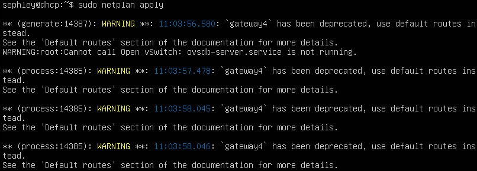

Auftrag DHCP & PXE M300 Vogel
Diese Dokumentation kombiniert beide Aufträge in einen grossen Auftrag. Ich habe diesen Auftrag auf meinem Client mit VMware Workstation Pro erledigt.
Netzwerkplan
Installation DHCP
DHCP Auftrag
DHCP Präsi
Ich habe eine Ubuntu VM installiert und drei Netzwerkadapter erstellt:
- NAT
- Vnet5
- Vnet6
1. APT-Packet installieren
sudo apt update
sudo apt install isc-dhcp-server
2. Konfiguration DHCP
Um unseren frisch installierten DHCP server zu konfigurieren, müssen wir das File /etc/dhcp/dhcpd.conf bearbeiten.
Folgende Konfiguration habe ich verwendet (Die MAC-Adressen habe ich von VMware ausgelesen):
default-lease-time 600;
max-lease-time 7200;
# LAN
subnet 192.168.1.0 netmask 255.255.255.192 {
range 192.168.1.5 192.168.1.60;
option routers 192.168.1.2;
option domain-name-servers 1.1.1.1, 9.9.9.9;
# PXE-Server config
next-server 192.168.1.3;
filename "lpxelinux.0";
}
host windowsclient {
hardware ethernet 00:0C:29:15:BC:DB;
fixed-address 192.168.1.4;
}
host pxeserver {
hardware ethernet 00:50:56:2B:35:1A;
fixed-address 192.168.1.3;
}
2.1. Was wurde genau konfiguriert?
default-lease-time 600;: Legt die Standard-Leasedauer für IP-Adressen auf 600 Sekunden (10 Minuten) fest.max-lease-time 7200;: Setzt die maximale Leasedauer für IP-Adressen auf 7200 Sekunden (2 Stunden).subnet 192.168.1.0 netmask 255.255.255.192 { ... }: Definiert Subnetz, IP-Range Router, DNS-Server und PXE-Server.host windowsclient { ... }: Definiert einen Host mit der MAC-Adresse 00:0C:29:15:BC:DB und der festen IP-Adresse 192.168.1.4.host pxeserver { ... }: Definiert einen Host mit der MAC-Adresse 00:50:56:2B:35:1A und der festen IP-Adresse 192.168.1.3.
Anschliessend identifizieren wir unser Netzwerkinterface mittels ip a und tragen es bei /etc/default/isc-dhcp-server ein.
Somit legen wir fest auf welchem Interface unser DHCP-server laufen sollte.
INTERFACESv4="ens33"
3. Statische IP vergeben
Nun können wir unseren DHCP server eine statische IP geben unter: /etc/netplan/00-installer-config.yaml
Ich habe die bereits vorhandene Version wie folgt überschrieben.
network:
version: 2
ethernets:
ens33:
dhcp4: no
addresses:
- 192.168.1.2/26
nameservers:
addresses: [1.1.1.1, 9.9.9.9]
Danach folgenden Befehl auführen: sudo netplan apply
4. Dienst neustarten & DHCP testen
sudo systemctl restart isc-dhcp-server.service
Nun sehen wir auf dem Windows Client die vergebene IP:
{kind=link}
Allerdings hat der Client noch keinen Internetzugang.
5. Internetzugang auf dem Client ermöglichen
echo 1 > /proc/sys/net/ipv4/ip_forward
iptables –t nat –A POSTROUTING –o eth0 –j MASQUERADE
Wireshark
Durch den Installer kann man sich mit leichtigkeit durchklicken.
Um den DHCP Traffic zu analysieren habe ich auf dem Windows client ipconfig /renew & ipconfig /release ausgeführt und dies mit Wireshark aufgenommen.
Weil es etwas länger dauerte, gab es ein timeout. Deshalb sind im Bild 2-Mal Request & ACK.
{kind=link}
{kind=link}
DHCP Relay
Um diesen Dienst zu verwenden, benötigt man ein DHCP Relay Agent.
Der Agent wird benötigt, um Clients von einem separaten Netzwerk mit unserem DHCP-Server zu verbinden.
1. APT-Packet installieren
sudo apt update
sudo apt install isc-dhcp-relay
2. Konfiguration
Folgendes config file wie folgt bearbeiten /etc/default/isc-dhcp-relay:
SERVERS="192.168.1.2"
INTERFACES="ens33"
3. Dienst neustarten
sudo systemctl restart isc-dhcp-relay
udhcpd
Eine alternative zum isc-dhcp-server wäre udhcpd. Es wurde entwickelt, um eine ressourcenschonende Implementierung des DHCP-Protokolls bereitzustellen.
Wie man sich also vorstellen kann, ist der Hauptvorteil von udhcpc der niedrige Ressourcenverbrauch im Vergleich zu isc-dhcp-relay, ist dafür etwas limitierter was die Funktionalität angeht.
Ich dachte zuerst, dass die neuste Version laut ihrer Webseite im Jahr 2002 veröffentlicht wurde.
Das Debian Packet ist aber aktueller.
1. APT Packet installieren
sudo apt install udhcpd
2. udhcpd konfigurieren
/etc/udhcpd.conf mit gewünschtem Texteditor öffnen und wie folgt bearbeiten:
start 192.168.1.5
end 192.168.1.60
option subnet 255.255.255.192
option router 192.168.1.2
option dns 1.1.1.1
option lease 600
interface ens33
lease_file /var/lib/misc/udhcpd.leases
static_lease 00:0C:29:15:BC:DB 192.168.1.4
static_lease 00:50:56:2B:35:1A 192.168.1.3
3. Aktivieren und Dienst starten
sed -i '/DHCPD_ENABLED/ s/no/yes/' /etc/default/udhcpd
touch /var/lib/misc/udhcpd.leases
update-rc.d udhcpd defaults
sudo service udhcpd restart
Nun sehen wir auf dem Windows Client wieder die vergebene IP:
{kind=link}
PXE
"Beim Aufstarten des Clients soll dieser das Betriebssystem über den PXE-Server beziehen und ordnungsgemäss starten. Die Konfiguration und der Aufbau des Netzwerkes sollen ersichtlich sein."
Das setup des PXE-Servers wurde NICHT auf der gleichen VM wie der DHCP vorgenommen.
1. TFTP-server installieren
Ein TFTP-Server ist erforderlich, um die Boot-Dateien über das Netzwerk bereitzustellen.
apt install tftpd-hpa
mkdir /srv/tftp
2. PXELinux konfigurieren
apt install pxelinux syslinux-common
cp /usr/lib/PXELINUX/lpxelinux.0 /srv/tftp/.
cp /usr/lib/syslinux/modules/bios/ldlinux.c32 /srv/tftp/.
mkdir /srv/tftp/pxelinux.cfg
Erstelle und bearbeite anschliessend diese Datei /srv/tftp/pxelinux.cfg/default
default slitaz
prompt 0
label slitaz
menu label Slitaz
kernel slitaz/bzImage
append initrd=slitaz/rootfs4.gz,slitaz/rootfs3.gz,slitaz/rootfs2.gz,slitaz/rootfs1.gz rw root=/dev/null vga=normal autologin
2.1. Was wurde hier konfiguriert?
PXELinux ist ein Bootloader, der speziell für das Booten über das Netzwerk entwickelt wurde und auf Syslinux basiert.
Wir installieren es mittels APT.
Das syslinux-common Packet enthält einige Abhängikeiten für PXELinux.
Hierbei werden lpxelinux.0 und ldlinux.c32 in das TFTP-Verzeichnis kopiert, da sie für den Bootvorgang benötigt werden.
Zudem erstellen wir das Verzeichnis /srv/tftp/pxelinux.cfg, wo wir das default config file für PXELinux erstellen.
3. Slitaz an den richtigen Ort kopieren
cd ~
wget http://mirror.slitaz.org/iso/4.0/slitaz-4.0.iso
mount -o loop slitaz-4.0.iso /mnt
mkdir /srv/tftp/slitaz
cp /mnt/boot/bzImage /mnt/boot/rootfs* /srv/tftp/slitaz/.
umount /mnt
3.1. Was kopieren wir hier?
Hier werden die benötigten Dateien des Betriebssystems Slitaz heruntergeladen und gemountet.
Anschliessend werden der Kernel (bzImage) und die initrd-Dateien (rootfs*) in das TFTP-Verzeichnis kopiert.
4. Setup Testen
{kind=link}
Probleme
1. Netzwerkadapter
Ich wusste nicht, wie ich mit den virtuellen Netzwerkadaptern umgehen musste. Ich habe einen NAT-Adapter und ein custom Netzwerksegment erstellt, doch mit dieser Konfiguration hatte ich keine Internetverbindung und dies lag daran, dass ich aus Versehen die ganze Konfiguration auf dem NAT-Adapter gemacht habe.
{kind=link}
Weil ich den Überblick verloren habe, habe ich eine neue VM erstellt und mit einem NAT-Adapter + einem Vnet Adapter hinzugefügt. Den NAT-Adapter habe ich nicht angefasst, der diente nur zur Internetverbindung. Die ganze Konfiguration wurde auf dem Vnet Adapter vorgenommen (Vnet 5 in meinem Fall).
2. Gateway

Ich habe eine Konfiguration im Internet gefunden, welche eine alte (depprecated) Konfiguration hatte. Man muss mittlerweile mittels routes den gateway setzen.
{kind=link}
3. Internetzugang Client
Nun habe ich festgestellt, dass die routes Option ein Fehler war, weil er versucht hat, über sich selbst zu routen und irgendeine zusätzliche Default Route gesetzt hat, die reingefunkt hat. Anschliessend habe die routes Option entfernt.
4. Internetzugang Server
Obwohl ich einen NAT-Adapter habe, kann ich mit dem DHCP-Server nicht mehr auf das Internet zugreifen. Ich konnte bis jetzt nicht herausfinden warum. Wir tun jetzt einfach so, als wäre es ein Security Feauture.
It's not a bug, it's a feature - a clever human being
5. Wireshark
Zu Beginn habe ich nur ipconfig renew ausgeführt ohne ipconfig release. Dies hat dazu geführt, dass ich nur den Acknowledge und den Request sehen konnte, weil der Client sich die restlichen Informationen bereits gemerkt hatte. So konnte ich keine vernünftige Analyse durchführen.
Reflexion
Obwohl ich diese Aufgabe im Experts-Kurs bereits schon hatte, konnte ich doch etwas von diesem Auftrag profitieren. Grund dafür sind die Zusatzaufträge und der erweiterte Zeitrahmen für die Aufgabe.
Ich habe dazugelernt:
- DHCP Relay in betrieb nehmen
- udchpd aufsetzen
- DHCP Traffic mit Wireshark analysieren
- Allgemein besseres Verständnis zu PXE & DHCP
Quellen
- Offizielle Installation
isc-dhcp-servervon Canonical
https://ubuntu.com/server/docs/how-to-install-and-configure-isc-dhcp-server - NAT Routing Ubuntu
https://linuxhint.com/configure-nat-on-ubuntu/ - Setup Blog
isc-dhcp-relayvon Reintech
https://reintech.io/blog/configure-dhcp-relay-agent-ubuntu-2004